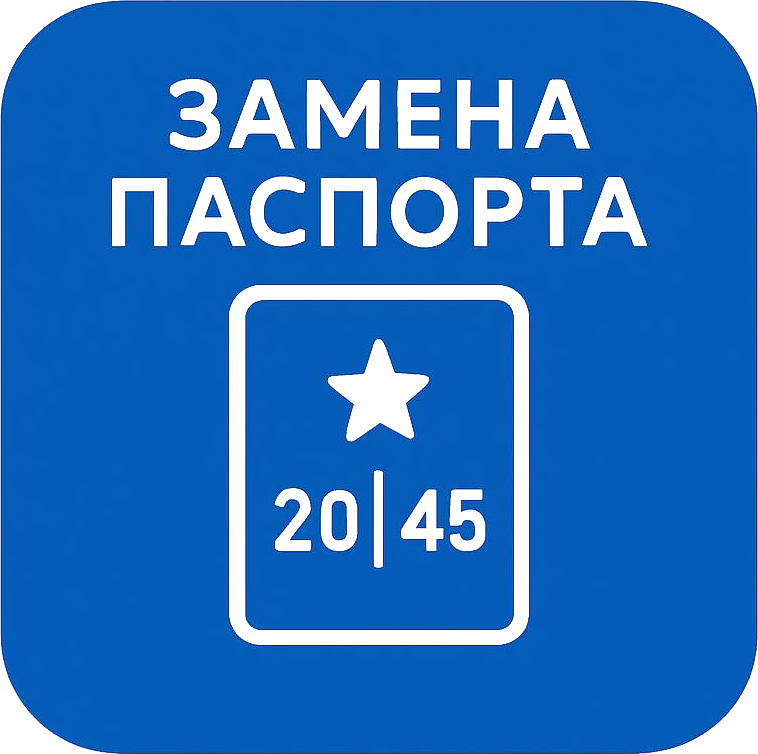

Пошаговая инструкция, чтобы всё прошло быстро и без ошибок
Подайте заявление не позднее 30 дней после наступления 20 или 45 лет. За каждый день просрочки — штраф 2 000–3 000 ₽.
Паспорт РФ (старый), две фотографии 35×45 мм, военный билет (для мужчин), свидетельства о рождении детей до 14 лет, квитанция об уплате пошлины.
Стоимость — 300 ₽ (при подаче через Госуслуги — 210 ₽ со скидкой 30 %). Реквизиты уточните на сайте вашего МФЦ.
Можно подать документы через портал Госуслуги или лично посетить ближайшее отделение МФЦ. При визите возьмите оригиналы всех документов.
Срок изготовления — 10 рабочих дней (в вашем регионе) или 30 рабочих дней (в другом регионе). МФЦ уведомит вас по СМС.
| № | Документ | Количество | Примечание |
|---|---|---|---|
| 1 | Паспорт РФ (старый) | 1 шт. | Обязательно — сдаётся вместе с заявлением |
| 2 | Фотографии 35 × 45 мм | 2 шт. | Матовые, на белом фоне, без головного убора |
| 3 | Квитанция об уплате госпошлины | 1 шт. | 300 ₽ или 210 ₽ (через Госуслуги) |
| 4 | Военный билет | 1 шт. | Для мужчин от 18 до 27 лет (если выдан) |
| 5 | Свидетельства о рождении детей | до 14 лет | Для проставления отметок о детях до 14 лет |
Наведите камеру, чтобы открыть инструкцию на телефоне